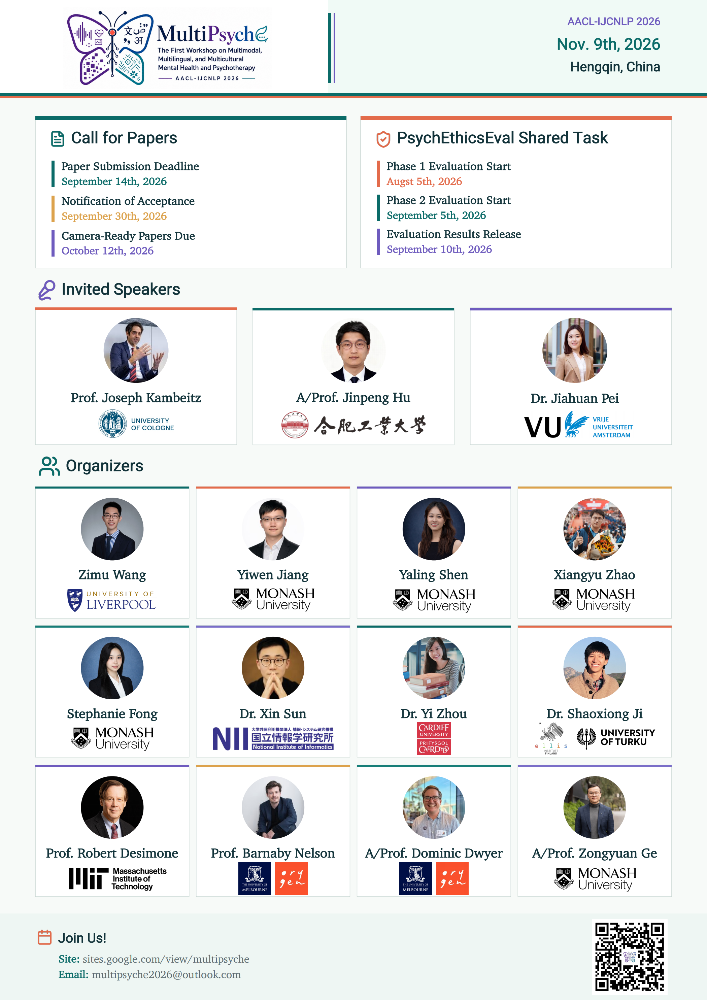

We are excited to announce the Call for Papers for MultiPsyche, the First Workshop on Multimodal, Multilingual, and Multicultural Mental Health and Psychotherapy. The workshop will be held in conjunction with the AACL-IJCNLP 2026 conference on Monday, November 9, 2026.
Mental health disorders represent a critical global challenge, serving as the leading contributor to illness and disability. Against this backdrop, the rapid advancements in large language models (LLMs) have catalyzed a paradigm shift in automated mental health support, offering unprecedented opportunities for scalable and accessible interventions.
MultiPsyche focuses on Multimodal / Multilingual / Multicultural AI × Mental Health & Psychotherapy, aiming to bring together researchers from NLP, multimodal learning, and mental health to explore more grounded, inclusive, and responsible Mental Health AI.
Call for Contributions
We invite submissions of original research that contribute to the development and understanding of AI-driven tools for mental health support. The workshop encourages cross-disciplinary collaboration and invites papers exploring, but not limited to, the following themes:
- Multimodal Understanding: Exploring how MLLMs can integrate diverse modalities, such as vision, audio, and text, to mirror a clinician’s holistic perception.
- Multilingual Accessibility: Seeking resources grounded in a broader range of languages and advancing cross-lingual transfer to democratize access to more high-quality mental health support across diverse linguistic communities.
- Multicultural Alignment: Examining how to build culturally aware models that respect diverse social norms and values, recognizing that distinct perceptions of mental illness, stigma, and help-seeking behaviors can vary drastically across different cultural contexts.

🎙️ Invited Talks
We are delighted to welcome three invited speakers from the psychology and LLM communities:
Prof. Joseph Kambeitz from the University of Cologne, A/Prof. Jinpeng Hu from
Hefei University of Technology, and Asst. Prof. Jiahuan Pei from Vrije Universiteit Amsterdam.
📄 Archival & Non-Archival Submissions
MultiPsyche welcomes both Archival and Non-Archival submissions:
- Archival: Direct submissions and ARR Commitments.
- Non-Archival: We also welcome work currently under review or already published for presentation, exchange, and discussion at the workshop.
So, if you have related work currently under submission or review, or would like to bring your published research to a broader community for discussion, we would be very happy to have you join us!
🧠 PsychEthicsEval Shared Task
We are also hosting the PsychEthicsEval Shared Task, grounded in relevant Australian psychology and psychiatry ethics guidelines. Through multiple-choice questions, open-ended tasks, and fine-grained ethics annotations, PsychEthicsEval evaluates LLMs’ ethical knowledge and behavioral responses.
If you are working on NLP, LLMs, MLLMs, Mental Health, Psychotherapy, Affective Computing, AI Ethics, or related topics, we warmly welcome your submissions and participation!
Workshop Details
- Date: Monday, November 9, 2026
- Venue: Co-located with AACL-IJCNLP 2026 in Hengqin, Zhuhai
- Website: MultiPsyche Official Website
Looking forward to seeing everyone in Hengqin, Zhuhai this November! 🍁
For submission guidelines, deadlines, and more details, please visit the official MultiPsyche website.